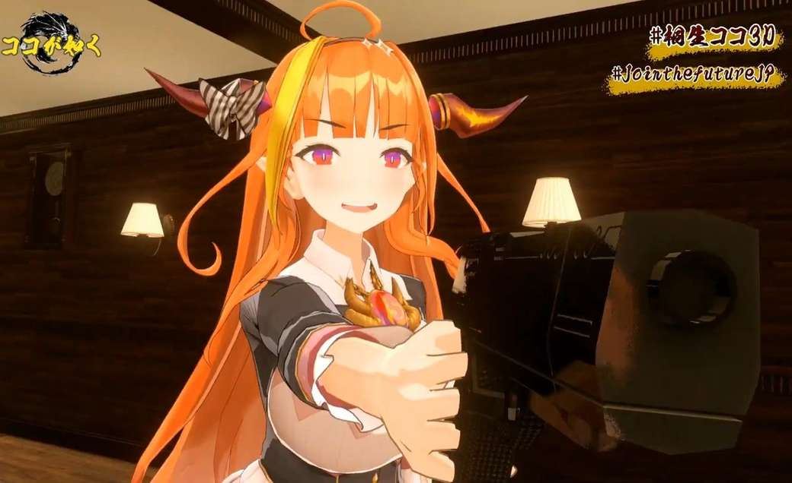

Who is Coco?
Kiryu Coco was a Hololive Vtuber of holoForce, or the 4th Generation of streamers. A certain force to be rekoned with, Coco is the enigmatic gang leader of the Kiryu Kai Clan, which makes up of all her fans. Strong-willed, heart-warming, ambitious and all amounts of crazy and chaotic. She was mainly responsible for the creation and spread of the substance: asacoco, introducing her friends to memes in Meme Reviews, and for her morning news shows.
Don't worry, it's not a real gun lol
Notable Clips and Memes
- Good Morning M*** F***ers
- Coco's Chaotic Dancing
- Legendary EN V-Audition Ad
- 2020 Kiryu Coco Experience
holoForce Gen Mates (4th Generation of Hololive)
- Amane Kanata
- Tokoyami Towa
- Tsunomaki Watame
- Hinemori Luna